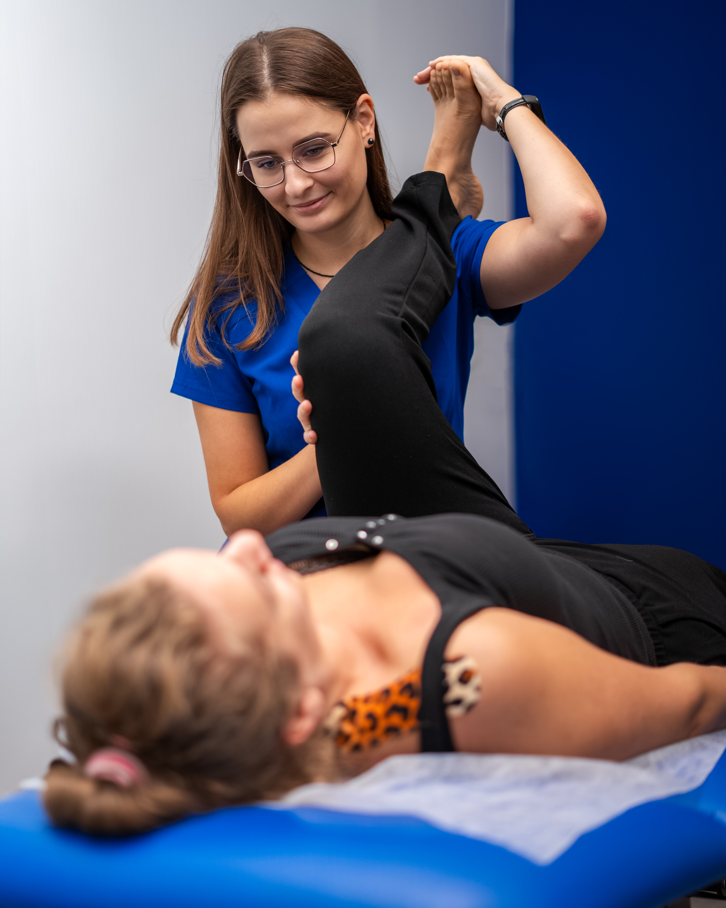
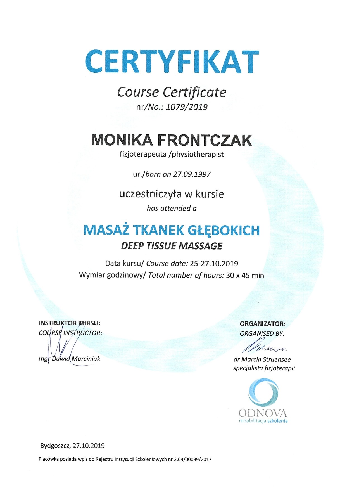
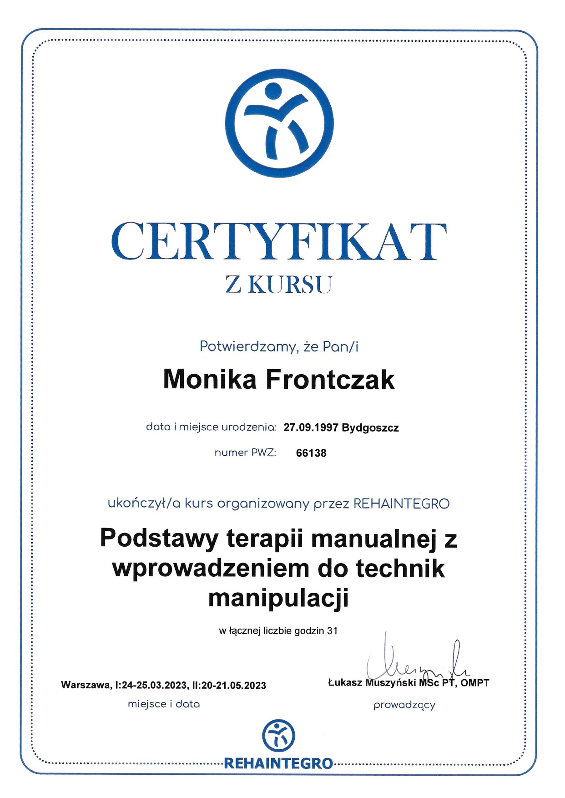
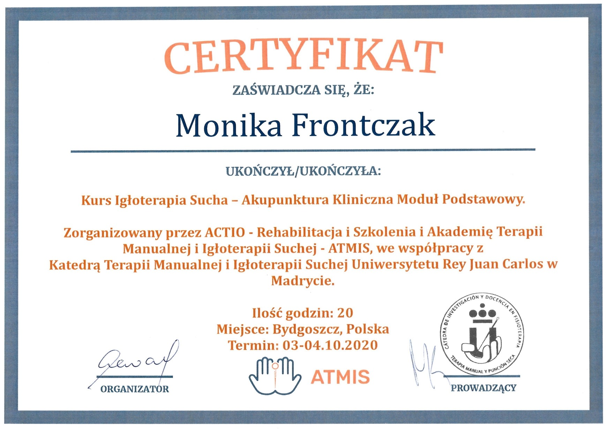
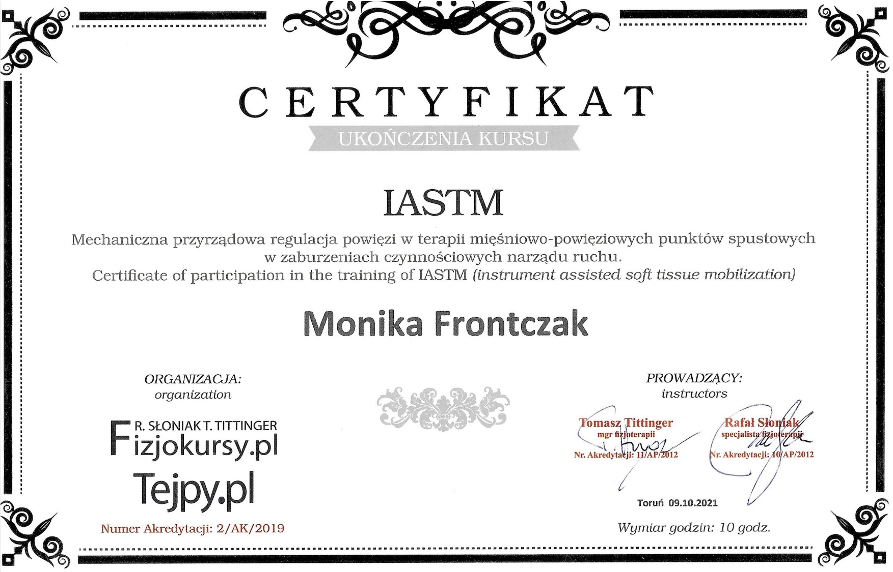
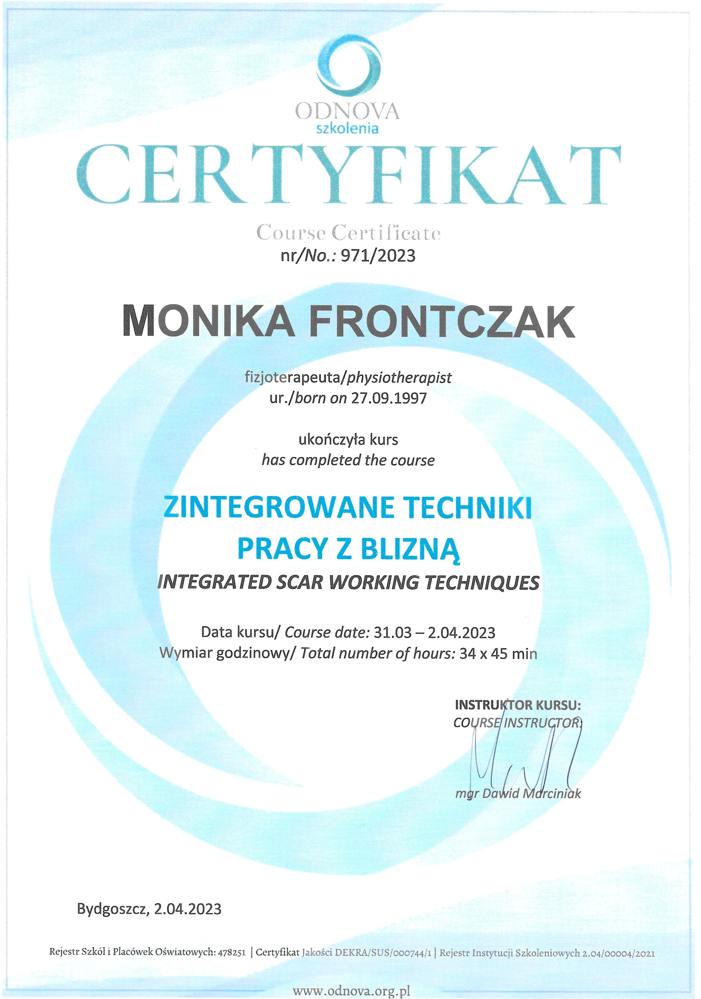
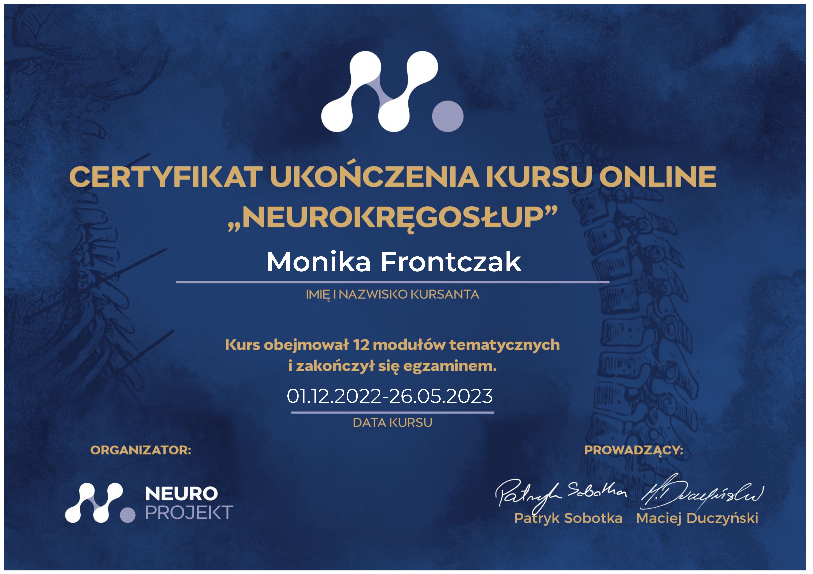
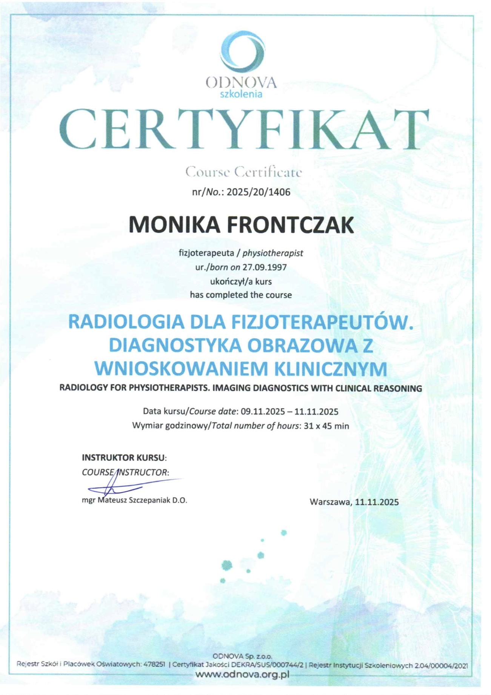
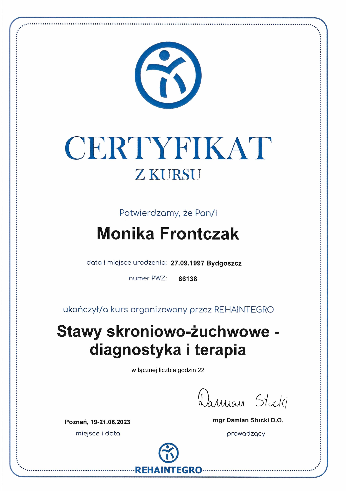
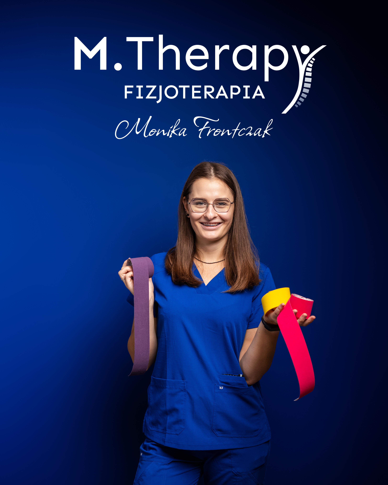

Fizjoterapia Ortopedyczna
Bóle i dysfunkcje układu mięśniowo-szkieletowego, urazy, zwyrodnienia, dyskopatie. Przywracamy sprawność i prawidłową biomechanikę.
Umów WizytęSkuteczna terapia, indywidualny plan leczenia i komfortowa atmosfera.
Rehabilitacja na najwyższym poziomie, opartej na aktualnej wiedzy i doświadczeniu.
Terapia dopasowana do potrzeb i celu leczenia każdego pacjenta.
Komfortowa, życzliwa atmosfera podczas każdej wizyty.
Leczę człowieka, nie tylko objaw – kompleksowo i skutecznie.
Nazywam się Monika Frontczak i jestem fizjoterapeutką. Ukończyłam studia magisterskie na Collegium Medicum im. Ludwika Rydygiera w Bydgoszczy UMK w Toruniu.
Przyjmuję w moim gabinecie M.Therapy przy ul. Bohaterów Kragujewca 2 w Bydgoszczy. Pracuję indywidualnie, koncentrując się na Twoich potrzebach.
Specjalizuję się w terapii pacjentów ortopedycznych i stomatologicznych, pomagam także po urazach, przeciążeniach i operacjach. Zajmuję się dolegliwościami w obrębie stawów skroniowo-żuchwowych, bólami głowy i szumami usznymi oraz wsparciem w trakcie leczenia ortodontycznego.









Bóle i dysfunkcje układu mięśniowo-szkieletowego, urazy, zwyrodnienia, dyskopatie. Przywracamy sprawność i prawidłową biomechanikę.
Umów WizytęTMJ, bóle głowy, bruksizm, szumy uszne. Rehabilitacja po zabiegach dentystycznych i w trakcie procesu ortodontycznego.
Umów Wizytę
Po złamaniach, skręceniach, stłuczeniach oraz innych kontuzjach. Bezpieczny powrót do normalnego funkcjonowania.
Umów WizytęPrzygotowanie do zabiegu i usprawnianie po operacji. Plan dopasowany do Twojego zdrowia i celów.
Umów WizytęĆwiczenia specyficzne dla dysfunkcji ruchowych, nauka ergonomii i prawidłowych wzorców ruchowych.
Umów WizytęWspomaganie gojenia, poprawa czucia i ruchomości tkanek. Komfort i estetyka w jednym.
Umów WizytęRedukcja napięcia, poprawa krążenia i elastyczności tkanek. Opcja masażu świecą aromatyczną.
Umów WizytęKompleksowe podejście do zgrzytania zębami: techniki manualne, edukacja i wsparcie.
Umów WizytęBóle kręgosłupa oraz stawów obwodowych, np. bioder, kolan, barków, nadgarstków, napięciowe bóle głowy.
Skręcenie kostki, naderwanie mięśni, naciągnięcie więzadeł, stan po wypadku komunikacyjnym, po złamaniu lub pęknięciu kości.
Przeskakiwanie w okolicy stawów skroniowo‑żuchwowych, bruksizm, zgrzytanie zębami, bóle głowy, karku, twarzy, ograniczenie otwierania ust, ból podczas żucia twardych pokarmów, szumy uszne, uczucie zatkania ucha, porażenie nerwu twarzowego.
Endoprotezoplastyka stawu, operacje kręgosłupa, artroskopia stawu kolanowego, rekonstrukcja więzadeł krzyżowych, leczenie zespołu cieśni nadgarstka, operacje barku, stan po zespoleniu złamania.
Ograniczenie ruchomości stawów, osłabienie siły mięśniowej, drętwienie, mrowienie rąk/nóg, zaburzenia równowagi i koordynacji.
Powikłania po zabiegach stomatologicznych, po ekstrakcjach zębów, problem z adaptacją po implantach, dyskomfort odczas szynoterapii, kompleksowe wsparcie fizjoterapeutyczne podczas procesu ortodoncji.
Nie przejmuj się, jeśli Twojego problemu nie ma na liście! Skontaktuj się i dowiedz się, jak mogę Ci pomóc.
| Usługa | Cena | Opis | Czas |
|---|---|---|---|
| Fizjoterapia | 200 zł | Wywiad, diagnostyka oraz indywidualnie dobrana terapia dot. bólu/dysfunkcji aparatu ruchu, czyli mięśni lub stawów. | Ok. 45–55 min |
| Fizjoterapia Stomatologiczna | 200 zł | Wywiad, diagnostyka oraz indywidualnie dobrana terapia dot. problemów w obrębie stawów skroniowo-żuchwowych, bólu głowy/twarzy, szumów usznych, bruksizmu itd. | Ok.45–55 min |
| Trening Medyczny | 150 zł | Indywidualny trening poprzedzony zwykłą wizytą fizjoterapeutyczną. | Ok. 45–60 min |
| Masaż Leczniczy | 200 zł | Masaż z oliwką, może obejmować sam grzbiet lub grzbiet i kończyny dolne. | 60 min | Kinesiotaping | Od 40 zł | Technika stosowana jako terapia wspomagająca. | - |